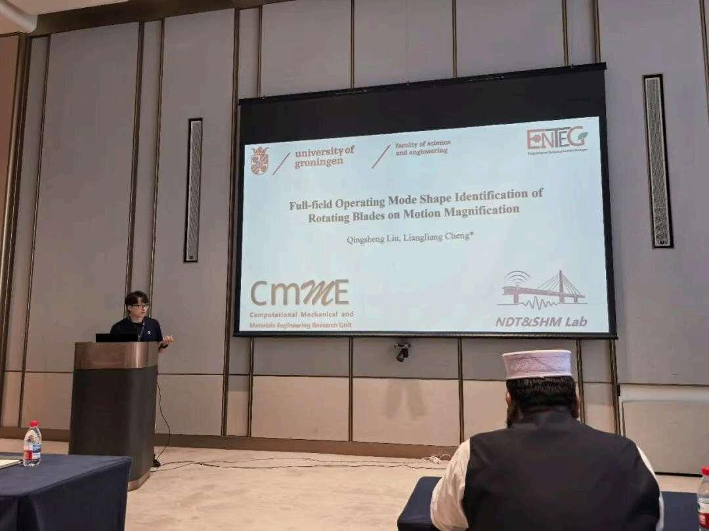

Our PhD student Qingsheng Liu wins the Best Oral Presentation Award at ICSVIDP 2026
Congratulations to our PhD student Qingsheng Liu on receiving the Best Oral Presentation Award at the 2026 International Conference on Structural Vibration and Intelligent Disaster Prevention (ICSVIDP 2026), held in Xiong'an New Area, China, from July 17 to 19, 2026.
Qingsheng delivered an oral presentation entitled Full-Field Operating Deflection Shape Identification of Rotating Blades Using Motion Magnification, sharing research on camera-based vibration measurement of rotating structures.
Extracting the operating deflection shapes of rotating blades is challenging because the rotational motion can obscure small vibrations. The proposed approach records the blades with a camera, estimates their angular position frame by frame, and applies inverse registration to obtain a quasi-stationary view. Edge phase information is then extracted and used with phase-based motion magnification to identify full-field operating deflection shapes.
The conference focused on structural vibration control, intelligent disaster prevention, and fundamental methods in structural dynamics. It provided a forum to discuss research supporting the safety and sustainable development of engineering equipment and infrastructure.
Well done, Qingsheng, on this recognition and on presenting the group's work to the structural dynamics community!
